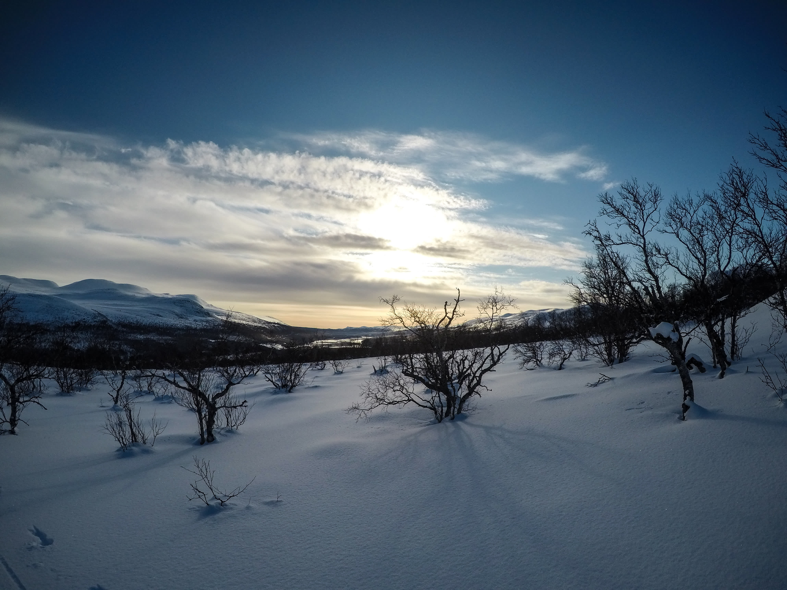
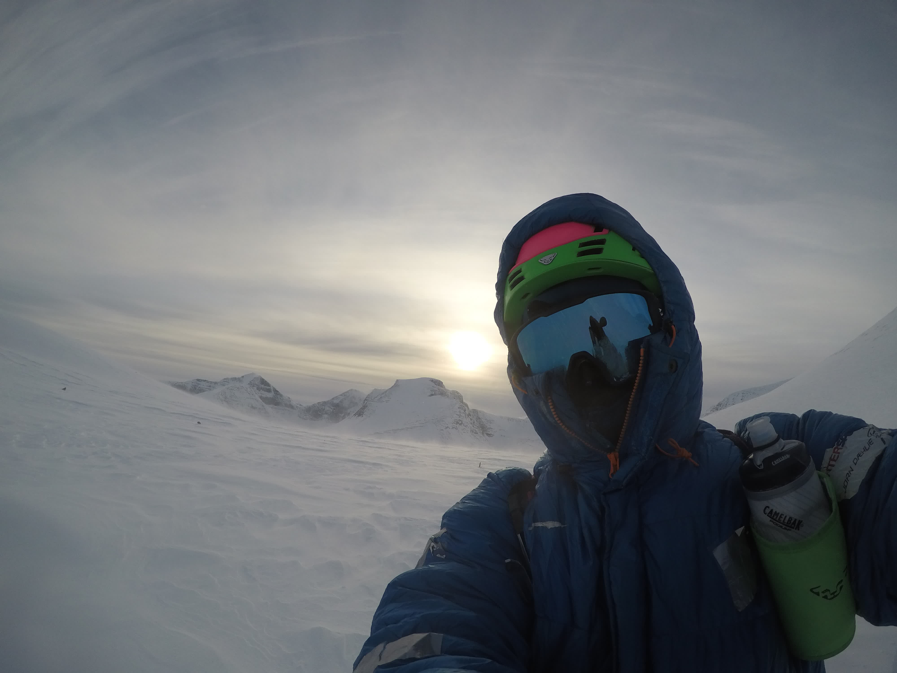

Tidlig i mars hadde det kommet unormalt mye snø i Rondane, og jeg utnytta muligheten til å dra på topptur i området. Planen var egentlig å få gått en runde over noen av toppene over 2000 moh, men mye dyp snø og skredfare gjorde at jeg snudde ved Midtronden, og gikk samme vei tilbake.
Kart over ruta (kan ta noen sekunder før det dukker opp). På vei oppover bjørkeskogen.På toppen av Høgronden med utsikt mot Rondeslottet.De to Midtrondene i sikte.Flanken til høyre hadde jeg opprinnelig tenkt å stå ned, men der var det stor fare for å løse ut skred.På toppen av Midtronden Aust, med utsikt mot Midtronden Vest.Sola nærmer seg horisonten, rett over Rondeslottet.Nede igjen ved Gammelgarden.